Interiores Estelares
Autor: Nicolás Gómez Giménez
Introducción
La estructura estelar se estudia en razón de la leyes de la física por obvias razones. Estas leyes logran explicar y predecir como se comporta la estructura estelar.
Las condiciones de equilibrio interno de una estrella es expresado con un conjunto de 4 ecuaciones diferenciales, que gobiernan la distribución de masa, la presión del gas, la energía producida y transportada en la estrella.
Ecuación de continuidad de masa
Comenzaremos con aquella ecuación diferencial que domina la distribución de masa.
Supongamos que la estrella posee simetría esférica, entonces podemos entonces dividir a la estrella es cáscaras concéntricas de espesor diferencial dr y encontrar así la ecuación del balance de masas.
Partimos de la definición de densidad:
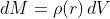
luego por la simetría esférica el diferencial de volumen es de la forma:
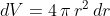
lo que nos deja escribir al diferencial de masa como:
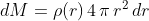
dividiendo en ambos lados de la igualdad por dr obtenemos finalmente la continuidad de la masa:
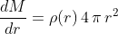
Si resolvemos esta ecuación diferencial nos daría M(r) como solución.
Ecuación de estado
Otra ecuación que se usa en el modelo de la estructura estelar, es la ecuación de estado.
El estado de un gas esta descripto por la presión P, la densidad y la temperatura T. La ecuación de estado relaciona estas tres magnitudes, así expresamos a la presión, a través de una función f, con respecto a la densidad y a la temperatura.
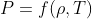
La forma de la ecuación f, depende de la naturaleza del gas, y se tiene que un gas ideal se comporta con la relación
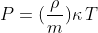
donde m es la masa total, y la letra kappa es la constante de Boltzmann.
Teorema del Virial
Para poder comprender el significado de la evolución estelar, y tener nociones de la teoría del interior estelar debemos introducirnos en el Teorema del Virial.
Sea un sistema de partículas en un recinto acotado, tal que las mismas están ligadas gravitacionalmente entre sí.
De este sistema, se puede deducir el Teorema del Virial, el cual dice que la energía cinética es la mitad del módulo de la energía potencial gravitatoria de un sistema de partículas autogravitantes (suponiendo gas ideal no-relativista).
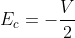
Esta ecuación junto con la ecuación de la Energía mecánica total del sistema de un sistema autogravitante aislado
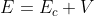
nos deja deducir que
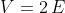
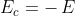
Diferenciando ambas ecuaciones obtenemos
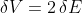
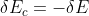
Como el sistema es autogravitante, pierde energía por radiación, es decir que el cambio en energía es menor a cero. Más aún, observando las ecuaciones de arriba deducimos que la energía potencial va a ir disminuyendo, mientras que la energía cinética va a ir aumentando conforme el sistema pierde energía.
Como la energía potencial gravitacional es inversamente proporcional a -r tenemos que si la energía potencial disminuye entonces el radio debe disminuir, en otras palabras el sistema se contrae. Por otro lado consideremos que el sistema se comporta como un gas ideal, debido a esto tenemos que la energía cinética es proporcional con la temperatura, y en consecuencia como la energía cinética aumenta conforme se pierde energía mecánica la temperatura debe aumentar. En conclusión, gracias al teorema del Virial, vemos que un sistema autogravitante que se comporta como un gas ideal al irradiar energía se contrae y aumenta en temperatura. Este sistema en definitiva es inestable, y evoluciona hacia la catástrofe.
Existen ciertos factores que pueden frenar esta tendencia, ya sea de forma temporal o permanentemente. Por ejemplo de forma temporal podría ser el caso en que el sistema este recibiendo energía externa y por lo tanto retrasando su agotamiento total de energía. Esta energía externa puede provenir de otra fuente como ocurra en las reacciones nucleares de fusión. Así , sin ahondar en el caso de freno permanente, recordemos que las estrellas que comenzaron a quemar hidrógeno en helio, liberan energía en este proceso, y por lo tanto, el sistema lo adquiere como energía adicional. Esta energía adicional, genera que el delta de energía sea mayor a cero y entonces por el teorema del Virial, la estrella se dilata y se enfría. (caso contrario al delta de energía menor a cero). Se establece entonces una cadena de retroalimentación negativa que conduce a una situación estable, donde se genera estrictamente la misma energía por fusión que la que se pierde por radiación. Esto nos deja decir que el sistema es estable o cuasi-estable.
Equilibrio Hidrostático
Ahora como el sistema posee un estado estable para cada nivel de energía E, podemos pensar que si el mismo fuera de simetría esférica de radio R, entonces la energía potencial, la energía cinética y la Temperatura van como el inverso de R.
Además cada elemento de masa dm experimenta una fuerza hacia el centro debido a la gravedad, y una fuerza hacia afuera por la presión gaseosa. Ambas fuerzas se equilibran generando una situación de equilibrio hidrostático.
Cualitativamente esto se puede analizar sabiendo que la aceleración por la gravedad va como R^-2 y en un gas ideal P va proporcional al producto entre la densidad y la temperatura , además la densidad va como el inverso del radio al cubo lo que resulta que P va como el inverso del radio a la quinta. Por lo tanto si se causará una contracción adiabática a la estrella, las fuerzas de presión tenderían a crecer más rápidamente, tendiendo a restablecer el equilibrio dilatando al sistema. Si por otro lado, la estrella sufre una expansión , las fuerzas de presión resultan ser más débiles que la gravitatoria, y la estrella tendería nuevamente a contraerse hacia el equilibrio.
Poniéndolo en forma de ecuación, y aprovechando la simetría esférica, tomemos un elemento dm de la estrella de la siguiente figura.

Figura 1. Modelo esférico del interior estelar, podemos observar que el diferencial de masa depende exclusivamente de r.
Al elemento dm le actúa una fuerza gravitatoria de la forma
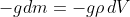
Donde g es la aceleración de la gravedad . Por la simetría esférica tenemos que
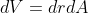
donde dA es un diferencial de superficie de la esfera, con lo que
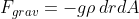
Por otro lado la fuerza de presión sobre las caras de dm es
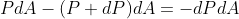
Para que la estrella este en equilibrio la suma de las fuerzas debe ser cero, con lo cuál
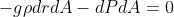
Dividiendo por dA ambos miembros de la igualdad nos queda
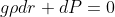
sabiendo que g tiene la forma siguiente
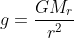
con lo cual obtenemos la primera ecuación del equilibrio hidrostático
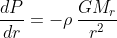
siendo M(r) la masa total contenida en la esfera de radio r la cual se puede obtener de la ecuación diferencial
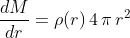
Con la condición de contorno M(r)= 0 en r = 0.
Así ambas ecuaciones , la ecuación diferencial de presión y la ecuación diferencial de masa junto con sus condiciones de contorno conforman la situación de equilibrio hidrostático.
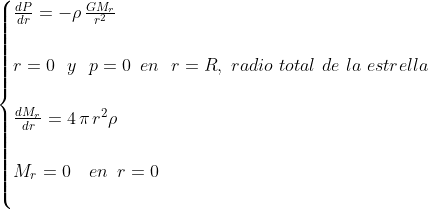
Este sistema de ecuaciones diferenciales puede ser resuelto analíticamente si la estrella es degenerada, ya que en este caso la densidad solo depende de la presión y no de la temperatura, en consecuencia al resolver estas ecuaciones podríamos conocer algunas características estructurales internas de la estrella.
Pero debido a que en la mayoría de los casos la densidad depende de la presión y de la temperatura no es posible resolver el sistema debido a que no se conoce su distribución.
Por otro lado para poder resolver la estructura interna de la estrella por completo, necesitamos más que conocer la distribución de la densidad y la cantidad de masa que posee. Por ejemplo, sabemos que si la estrella esta en equilibrio radiativo es posible expresar su gradiente de temperatura si se le conoce la luminosidad que atraviesa cada nivel, pero esto mismo depende del ritmo de las reacciones nucleares de su interior, y por lo tanto de la distribución de la temperatura. Entonces para conocer en su totalidad la estructura estelar, debemos tratar con la generación y el transporte de energía en su interior a la vez.
Balance Térmico
En el interior de las estrellas ocurren reacciones nucleares que liberan energía.
Supongamos que la estrella está en estado estacionario, la luminosidad emergente de cada capa puede obtener al resolver la siguiente ecuación diferencial , llamada la ecuación de la conservación de la energía
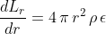
Siendo epsilon la potencia por unidad de masa. Donde la condición de contorno de la ecuación es Lr = 0 en r = 0.
Si la estrella no estuviese en estado estacionario entonces parte de la energía producida se podría repartir entre aumentar energía interna del sistema, realizar trabajo, o modificar su estructura química (ionización o disociación).
La cantidad de calor retenida en ese caso de acuerdo con la primera ley de la termodinámica es de la forma
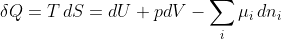
donde S es la entropía por unidad de masa , la letra griega mu es el potencial químico del constituyente i y ni el número de partículas del mismo por unidad de masa.
Como esta energía no participa en el flujo de energía la ecuación diferencial resultante para obtener la luminosidad nos queda
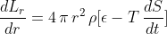
A esta ecuación diferencial se la denomina Balance de energía.
Ecuación de Transporte
Para obtener un modelo de estrella, debemos conocer como la energía se transporta dentro de la estrella hacia afuera de la estrella. En general, esta energía es transportada por conducción, convección o radiación. En los interiores estelares la conducción no suele ser apreciable.
La energía transportada debe comportarse de alguna forma que la temperatura T(r) no cambie con el tiempo, si esto sucede la estrella no podría estar en una estabilidad que lograra mantenerla viva por 10 mil millones de años como al sol . Para que la distribución de temperatura sea constante con el tiempo, la cantidad de energía por unidad de segundo saliente del sistema debe ser igual a la cantidad de energía por unidad de segundo entrante.
Supongamos que el transporte de energía por radiación domina, podemos entonces calcular la distribución de temperatura T(r). Tomamos el flujo de radiación f(r) que pasa a través de la superficie que esta en r. Si la superficie de la estrella irradia como un cuerpo negro tenemos que
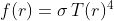
derivando respecto a la temperatura obtenemos
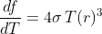
si interpretamos a df como un cambio pequeño en el flujo f , entonces obtenemos que
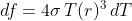
(1)
Además como el cambio de flujo depende de la opacidad del medio el cual atraviesa (coeficiente de opacidad representado por la letra griega kappa). En la estructura estelar nos conviene utilizar el coeficiente de opacidad por densidad del material, notado como
.png)
la opacidad por unidad de masa en r . Esto significa que kappa prima por la densidad nos debería dar la fracción de radiación absorbida por centímetro.
Usando la definición de df tenemos
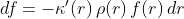
(2)
donde el signo menos representa que la cantidad de flujo disminuye debido a la absorción.
Por definición de la luminosidad para un capa de la estrella en r
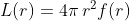
(3)
Usamos las ecuaciones (1) , (2) y (3) para obtener
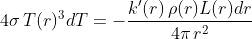
Obteniendo así
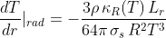
Esta expresión está corregida para tener en cuenta el transporte de calor por conducción, ya que en este proceso, el flujo transportado también es proporcional al gradiente de temperatura y puede introducirse entonces un coeficiente de opacidad que de cuenta simultáneamente los dos tipos de trasportes.
En el interior de estrellas normales la conducción es ineficiente debido a que los electrones que transportan energía pueden solamente viajar distancias cortas sin colisionar con otras partículas. Por otro lado la conducción tiene más relevancia en estrellas compactas , como las estrellas de neutrones y las enanas blancas. Podremos decir entonces que en estrellas normales la energía transportada por conducción puede ser despreciada donde el camino que recorren los fotones es extremadamente corto pero para algunos electrones es relativamente largo. Podemos ver que el gradiente de temperatura dada por la ecuación de transporte es negativo, esto significa que la temperatura decrece conforme las capas están más lejos del núcleo.
Si la energía transportada por radiación fuera pequeña, el gradiente de temperatura sería enorme, y en consecuencia, el gas comenzaría a moverse de forma tal que partes del mismo llevarían energía hacia el exterior de la estrella en mayor cantidad que la transportada por radiación. Esto es el transporte convectivo, donde el gas caliente sube hacia capas mas frías de la estrella para luego enfriarse y descender, lo que provoca después de un tiempo, que el gas se mezcle de forma tal que la composición de la estrella sea homogénea. Además debemos notar que este tipo de transporte de energía es el único que además de transportar energía, transporta materia.
Para obtener la ecuación del gradiente de temperatura para el caso convectivo, debemos suponer una cantidad de gas ascendente, el cuál en su movimiento lo hace de forma adiabática, tal que se cumple que
.png)
donde P es la presión del gas y la letra griega gamma es el coeficiente adiabático tal que
.png)
Siendo Cp y Cv los calores específicos a presión y volumen constante respectivamente.
Derivando la temperatura respecto del radio de la ecuación de la temperatura en función de la presión obtenemos al gradiente de temperatura debido al transporte por convección
.png)
Esta última ecuación llamada ecuación de transporte por convección no resulta ser una buena aproximación debido a que las capas mas externas de la estructura estelar intercambian calor con su alrededor, lo cual tiene que ser tenido en cuenta para obtener dT/dr. Sin embargo en algunos problemas esto puede ser despreciado y se seguiría usando dicha ecuación.
Un esquema que nos facilita la visión de como va la expresión del gradiente de temperatura es el siguiente
.png)
donde la expresión
.png)
es un valor crítico que aparece en la teoría y que indica la inestabilidad convectiva.
Conclusiones
Podemos entonces ver que para que la estructura estelar se uso la simetría esférica. Esto nos ayuda a obtener ecuaciones diferenciales que contienen funciones que dependen solamente del radio, así como lo son el coeficiente de opacidad, la densidad y la masa. Además, en el caso de la ecuación del transporte, el hecho de suponer que la materia del interior estelar se comporta como un gas ideal, nos ayuda a obtener una ecuación diferencial mucho más fácil de resolver, aunque en algunos casos tengamos el problema del borde estelar.
Referencias
J. Cabrera Caño. Apuntes de Astrofísica, páginas 99-106
Hannu Kartunnen. Fundamental Astronomy, páginas 229-231
Mark L. Kurtner. Astronomy a physics perspective, páginas 168-170